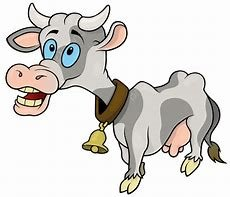

Ustedes conocen esa canción de las vacas que dan leche con chocolate y leche condensada.
Bueno, hay muchos científicos que han quedado traumados desde niños intentando lograr esto, hasta que llegó Hans Fritz Chucrut para solucionar este problema.
Solucionarlo, esa era su idea.

El profesor Chucrut investigó el tema durante muchos años, mientras destacaba por otros inventos. Alimentó a una vaca solo con chocolate, pero no dio resultado y quedó super acelerada la pobre. A otra le dio kilos de azúcar, pero solo le salieron caries. A otra la llenó de manjares hasta que se volvió vegetariana de puro odio al manjar.
¿Sería algo de la mente? Pensó el inventor.